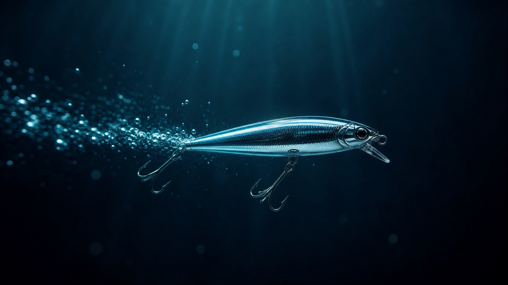

THE THURSDAY DROP · 2026-07-02
Fable 5 came back today. So did the code I promised.
On Tuesday I said I would drop real, working code you can grab and run yourself this Thursday, no engineering background required. It is Thursday. It is called Lure, it is open source, and it is the loop I keep talking about made into a thing you can actually hold.

Remember Fable 5? The model a lot of us moved our whole stack onto a couple weeks ago, the one Anthropic pulled 72 hours later, mid session, no warning? It came back today. Same model, second time around, model id claude-fable-5.
I am glad it is back. I am also not rebuilding anything around it, and that is kind of the whole point of what I am dropping today.
On Tuesday I told you that this Thursday I would drop real, working code you can grab and run yourself, no engineering background required. It is Thursday. So here it is. It is called Lure, it is open source, and it is live to play with right now.
If you followed the last couple weeks of me thinking out loud about loops, this is the loop, made into a thing you can hold. Loop engineering is the skill now, not the prompt. A loop is only as good as its finish line, the point where it can check its own work and know it is done. And the people pulling ahead are not the engineers, they are the folks who finally pointed this stuff at the problem they kept avoiding. Lure is me pointing it at mine.
Ad copy that starts from zero every single time was the problem I kept avoiding. So I built the loop that fixes it, and I am giving it away.
What Lure actually is
Lure is a learning loop for ad copy. The idea is almost boringly simple. Your hooks should get sharper every time you run them, instead of starting from zero every time you open a blank prompt box.
The loop looks like this:
You cast a batch of hooks for a channel. You tie on the ones you will actually run. You log what really converted. And a per-channel Tacklebox remembers your Keepers and your Throwbacks, so the next cast leans into what caught and refuses what did not.
Most "AI ad copy" tools are a fancy prompt box. They forget everything the second you close the tab. Lure keeps a memory, per channel, grown from your own scored results. That memory is the whole point. It is what turns a one-off generation into something that compounds.
The parts I care about
It runs a local open model by default. Ollama and Llama 3.2, on your own machine. Or you plug in your own API key. Either way your Keepers never leave your laptop.
It is browser-only or self-host. Everything you do in the demo stays in your browser. Want to run the whole thing yourself? One command with Docker and you have the full loop running locally.
It is MIT open source, free forever. Fork it, change the scoring to whatever metric your niche lives by, point the loop at SMS templates or landing-page headlines or video hooks. It is a pattern, not a product. The code is on GitHub and I would genuinely love a star if it is useful to you.
The model is a swappable part. The thing that compounds is the loop learning from your own real results.
Why I am not building around Fable, again
Here is the connective tissue, and the mistake I already made once. When Fable 5 first dropped I bolted it straight into a live project, skipped my own routing layer, and got wrecked when Anthropic pulled it mid session. So I am gun shy for a good reason. Lure is built the opposite way on purpose. It works with Fable 5 now that it is back, with Llama, with Claude, with GPT, with whatever lands next week. The model plugs in and out. It is a swappable part behind the loop.
What does not swap out is the loop. The Tacklebox learning which of your hooks caught and which flopped, on your channels, against your numbers, does not care which model is topping the leaderboard today. That is the part that keeps paying off long after today's re-release is old news. New models make each cast a little better. The loop is what makes you better.
If you want the loop closed for you
The free version runs the whole loop. You just score by hand. Lure Pro is the hosted layer that closes it automatically. Instead of typing scores, Pro pulls your real CTR, EPC, ROAS and CPA straight from your connected accounts and auto-scores every hook, so the metric lands back on the exact hook that earned it.
It connects to Meta, Google and TikTok, plus 8 affiliate networks:
Pro also runs managed Claude and GPT-4o class models for you, adds teams (owner, admin, agent) and a REST API. It is a waitlist for now, pricing not set. The open-source version stays generous and always free.
One last thing, because it is a long weekend
Real quick, a shout out to the mentee who lit this fuse. He built almost exactly this for SMS last week, a generator with a brain that learns from what actually landed, and he shared it with our internal crew of marketers. Then he nudged me to put some free code out there too. I learn from everyone around me, and honestly the best lessons lately have come from the people quietly grinding it out, not the thought leaders we all keep refreshing. He is one of those people. Lure is his idea, generalized and open, pointed at ad hooks. If you have been telling yourself this stuff is not for you, it is. Grab it, change the scoring to your metric, and point it at the workflow problem you keep avoiding.
Also, the logo swings. It is a little chrome lure, and the treble hooks actually swing when the page loads. That part was not necessary. I did it anyway. It made me smile.
That is the Thursday drop. No countdown, no hype reel. Go play with the loop, fork it if it is useful, and email me if you want the Pro waitlist. Then close the laptop and go watch some fireworks. The models will still be there Monday.